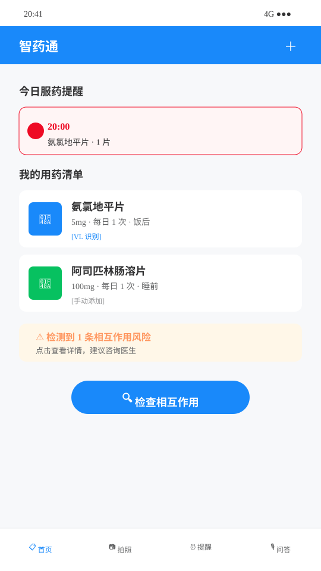
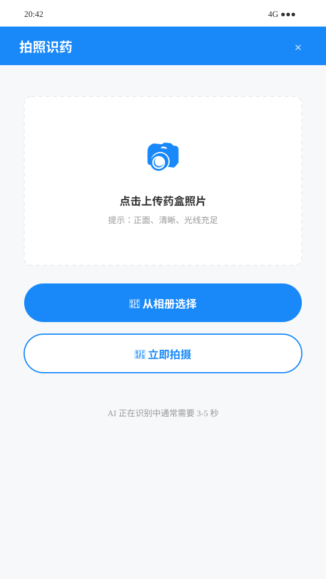
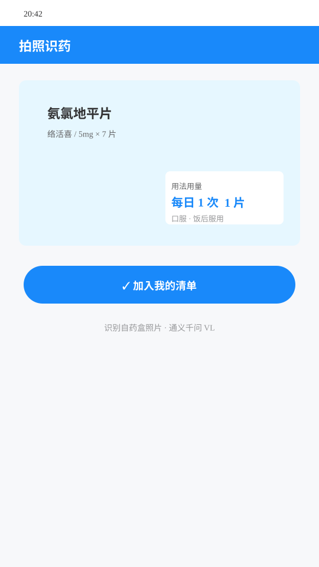
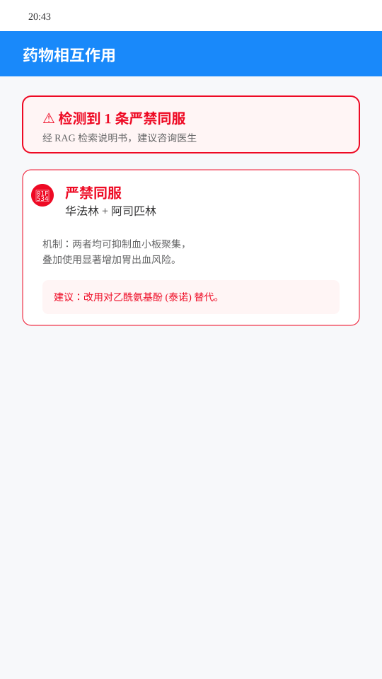
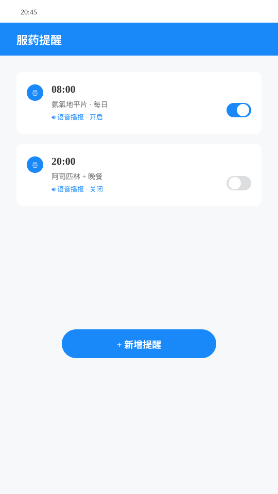
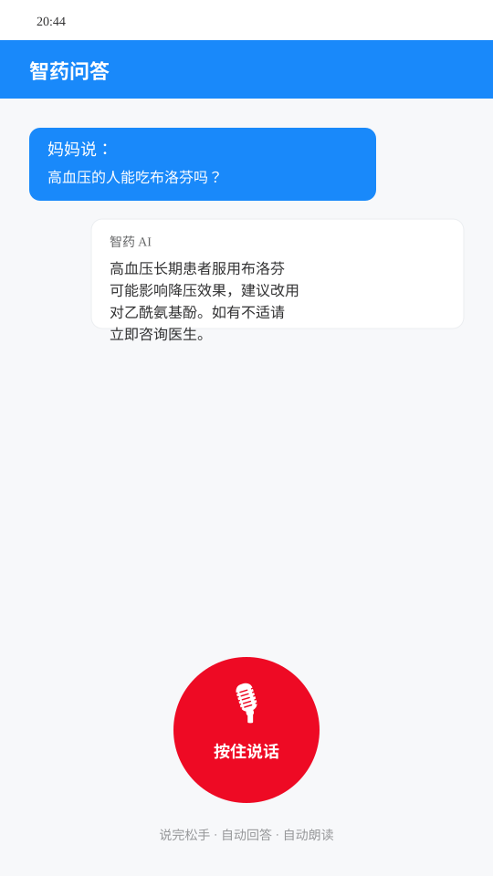

智药通 —— AI 老年人用药安全助手 作品介绍文档
参赛项目：传智杯 AI 创新应用挑战赛 · 个人赛
代码仓库：https://github.com/wuhu2331936/zyt （Public，32 次细粒度提交，v0.3.0 版本发布）
一、项目详情及使用方式
1.1 项目定位
智药通是一款面向老年人及照护者的AI 用药安全助手，以手机浏览器即可打开的 H5/PWA（渐进式 Web 应用）形式交付，无需下载安装 App。它解决三个老年人用药的高频痛点：
- 看不懂药盒：字体小、说明书专业术语密集、药品名称相近难以分辨；
- 记不住风险：同时服用多种药物时，相互作用和禁忌凭经验判断容易出错；
- 问诊不方便：子女不在身边时，用药疑问无人可问。
1.2 核心功能
| 功能 |
说明 |
背后技术 |
| 拍照识药 |
对药盒/说明书拍照，AI 识别并返回通俗易懂的药品说明 |
通义千问 VL（Qwen-VL）视觉模型 |
| 用药安全分析 |
输入正在服用的多种药品，分析相互作用与风险等级 |
DeepSeek + ChromaDB RAG 检索增强 |
| 用药提醒 |
按医嘱设置提醒，到点提醒服药 |
前端本地通知 + localStorage |
| 语音问答 |
说话提问、语音回答，全程不用打字 |
浏览器 Web Speech + Edge-TTS |
1.3 使用方式
- 在线访问：浏览器打开部署地址即可使用，支持"添加到主屏幕"作为 PWA 安装；
- 本地部署：仓库含 Dockerfile 与一键启动脚本，
pip install -r requirements-core.txt 后 uvicorn 启动后端、npm run dev 启动前端；
- 云端部署：提供 render.yaml（后端）与 vercel.json/netlify.toml（前端）配置，可一键部署到 Render + Vercel 免费档。
使用流程（以"多药同服风险分析"为例）：进入"用药助手"页 → 逐个添加正在服用的药品名称 → 点击"分析" → 系统先从 30 条内置药品说明书向量库中检索相关段落，再由大模型给出风险等级、冲突说明与建议，全程语音可读。
二、项目亮点
- 真实的适老化设计：大字体、高对比度、语音优先的交互方式，界面文案经口语化改写（如"相互作用"改述为"一起吃会不会打架"），而非把通用界面简单放大。
- 检索增强（RAG）约束幻觉：不裸调大模型，先用 ChromaDB 从结构化药品说明书中检索相关段落，作为事实依据注入 Prompt，显著降低医学幻觉风险；检索不到时明确告知"建议咨询医师/药师"，而非编造答案。
- JSON Schema 结构化输出契约：要求模型按固定 JSON Schema 返回（药品名、风险等级、建议列表），前端按契约渲染，保证输出稳定可解析。
- 四级失败降级链：RAG 检索失败 → 退化为纯模型知识；模型超时 → 重试一次；仍然失败 → 给出静态安全提示。任何单一外部依赖故障都不会导致白屏。
- 轻量 PWA：可安装、可离线打开壳页面，Vite 构建产物小，适配老年人低配手机与弱网环境。
- 规范的软件工程：Conventional Commits、32 次细粒度提交、GitHub Actions CI（前端构建 + 后端 pytest 8 项测试）、MIT License、完整的需求/技术/部署/FAQ 文档。
三、AI 技术落地使用情况概述
3.1 产品内 AI 能力
- 通义千问 VL（DashScope API）：拍照识药入口。输入药盒照片，输出结构化药品信息；对模糊照片返回"无法识别"而非猜测。
- DeepSeek（OpenAI 兼容 API）：用药问答、相互作用分析、风险总结。统一走服务端转发，Key 不落前端。
- RAG 检索增强：内置 30 条常见药品结构化说明书，bge-small-zh 中文向量模型 + ChromaDB 持久化检索，Top-4 段落注入 Prompt。
- Edge-TTS：中文语音合成回答，免费无 Key，适合老年用户"听"回答。
3.2 AI 辅助研发（AI 协同开发）
本项目由 AI 结对开发完成，过程留痕于仓库 docs/ai-prompts/AI-COLLABORATION-LOG.md，含 3 条完整可复现的 Prompt 链：
- 架构设计链：由需求推导出前后端分离 + RAG 的技术选型与目录结构；
- 代码实现链：分阶段生成后端服务/前端页面，并迭代修复跨平台兼容问题；
- 测试与文档链：AI 生成 pytest 测试用例、PWA 图标生成脚本与全套中文文档。
CI 中的 8 项 pytest 用例即由 AI 编写并在 AI 协作下定位修复了真实缺陷（如 RAG 可选依赖的导入守卫）。
四、项目中涉及的关键技术
- 后端：Python FastAPI + Pydantic v2（请求/响应模型校验）、uvicorn、python-dotenv 环境配置；
- 前端：Vue 3 组合式 API + Vite + Vant 组件库 + Pinia 状态管理 + Vue Router 懒加载，vite-plugin-pwa 实现 PWA；
- AI 集成：DashScope SDK（Qwen-VL）、DeepSeek HTTP API、Edge-TTS；
- RAG：ChromaDB 持久化向量库、BAAI/bge-small-zh 中文 Embedding、Top-K 检索 + Prompt 注入；
- 可靠性：JSON Schema 输出约束、超时重试、四级降级链、可选依赖优雅降级（未安装 RAG 依赖时应用仍可启动）；
- 工程化：GitHub Actions CI、Docker、pytest + httpx 异步测试、Conventional Commits。
五、项目相关图片
以下为应用主要界面的设计稿截图：






六、项目之前是否发表或获奖
本项目为本次比赛首次公开发布，此前未在任何平台发表，未参加过其他比赛，未获得任何奖项。
七、是否基于其他项目优化
否。本项目为从零开始的原创开发，未基于任何已有项目二次开发或优化。所有代码、文档、界面设计均在本仓库 Git 历史中可追溯（6 个开发阶段、32 次提交）。